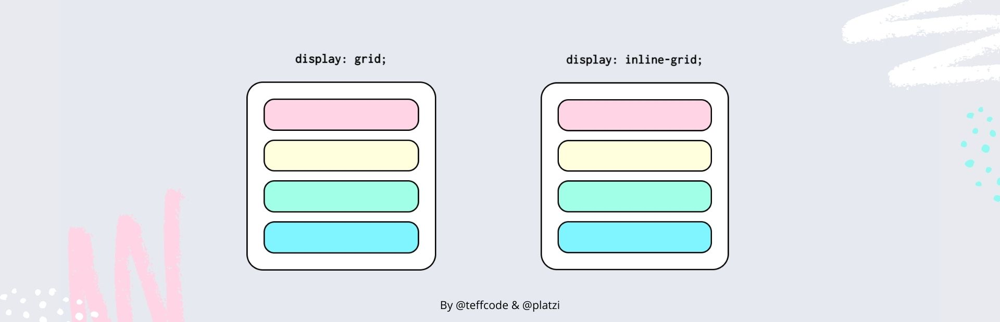
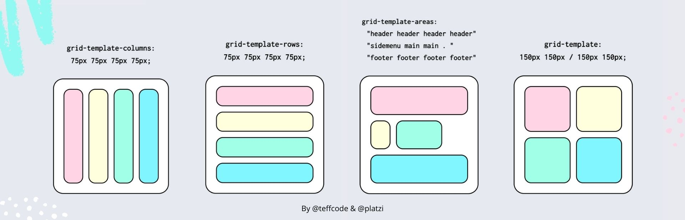
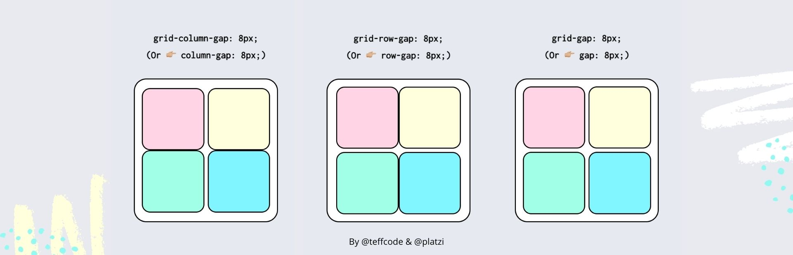
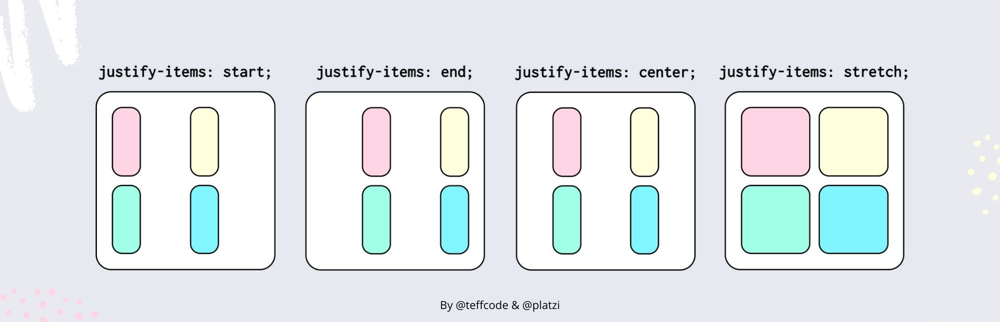
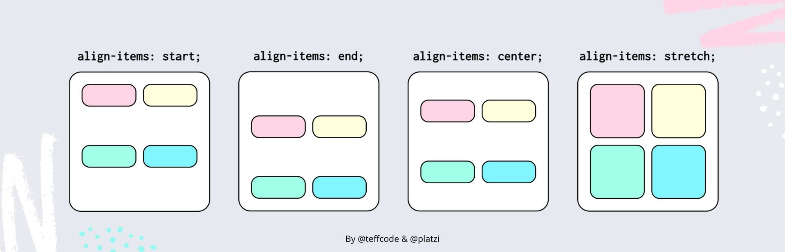
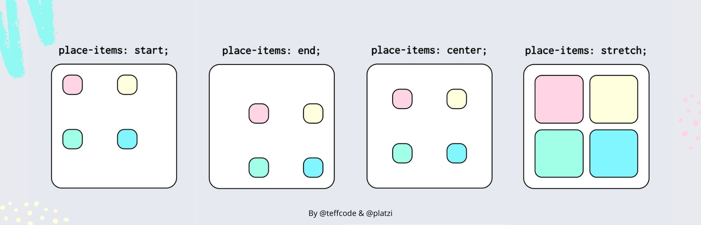
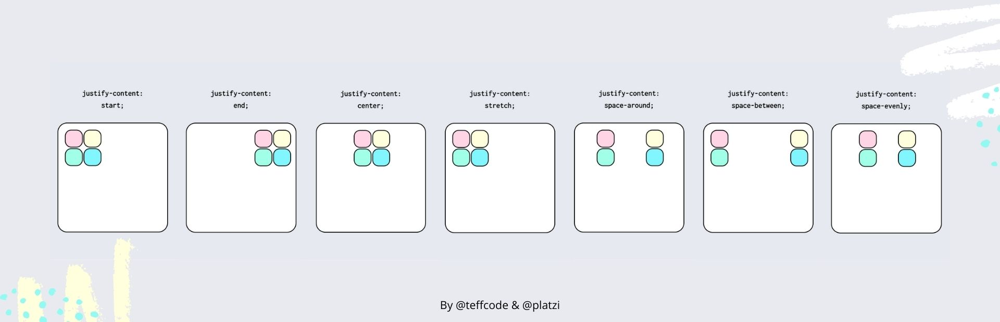

El internet móvil presenta un gran número de desafíos para los diseñadores de páginas web: debido a la enorme variedad de diseños de los dispositivos
móviles, es imposible saber qué formato tiene la pantalla en la que se visualizará el contenido web. Por esto, es esencial que los elementos individuales
(cajas de texto, gráficos, elementos interactivos) se distribuyan de forma independiente y al mismo tiempo de forma clara, teniendo en mente las respectivas
condiciones de espacio dadas por cada pantalla.
Hace un tiempo se trabajaba con los llamados floats, pero es una técnica compleja que daba lugar a muchos errores. Hoy los diseñadores cuentan con dos métodos para implementar un diseño dinámico: además de CSS grid, también se puede usar Flexbox. Sin embargo, las dos técnicas difieren en algunos aspectos.
Flexbox es unidimensional. Esto quiere decir que los elementos solo se pueden mover a lo largo de un eje. En cambio, un diseño CSS grid ofrece al diseñador web dos dimensiones para la colocación de los objetos porque, en lugar de solo un eje, permite crear una rejilla con filas y columnas
Propiedades mas usadas con ejemplos:
Display
La propiedad display define al elemento como un contenedor de cuadrícula y establece un nuevo contexto de formato de cuadrícula para su contenido.

Propiedades: grid-template-columns, grid-template-rows, grid-template-areas y grid-template
La propiedad grid-template-columns define las columnas y grid-template-rows las filas de la cuadrícula. La propiedad grid-template-areas define una plantilla de cuadrícula haciendo referencia a los nombres de las áreas de cuadrícula que se especifican con la propiedad grid-area de los elementos hijos.
La propiedad grid-template es una abreviatura para establecer grid-template-columns y grid-template-rows en una sola declaración.

Propiedades: grid-column-gap, grid-row-gap y grid-gap
La propiedad grid-column-gap (o column-gap) define el espacio entre columnas y la propiedad grid-row-gap (o row-gap) define el espacio entre filas
. La propiedad grid-gap (o gap) define el espacio entre filas y columnas.

justify-items
La propiedad justify-items alinea los elementos de la cuadrícula a lo largo del eje inline (eso es horizontal en nuestro caso).

align-items
La propiedad align-items alinea los elementos de la cuadrícula a lo largo del eje block (vertical en nuetro caso).

place-items
La propiedad place-items alinea los elementos de la cuadrícula a lo largo del eje inline y block al mismo tiempo.

justify-content
La propiedad justify-content alinea el contenido de la cuadrícula a lo largo del eje inline (horizontal en nuetro caso).

Code, E. (30 de 08 de 2020). platzi. Obtenido de https://platzi.com/blog/css-grid-cheat-sheet-contenedores/